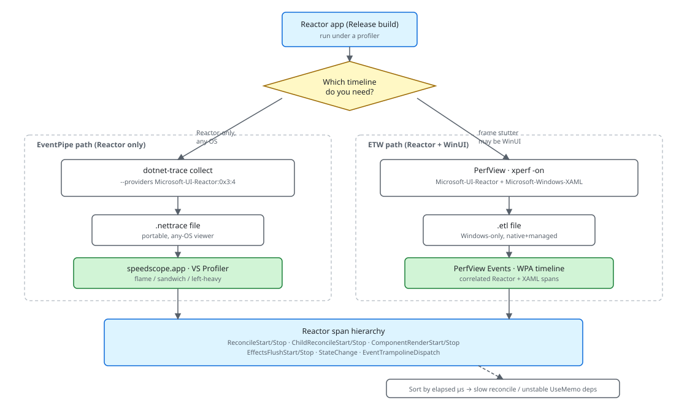

Performance¶
A Microsoft.UI.Reactor (Reactor) app emits a structured account of its own work — one event at
the start and end of every reconcile pass, every component render,
every effect flush, every state write, every WinUI routed-event hop —
through one managed EventSource named Microsoft-UI-Reactor. You
attach a profiler, mask in the keywords you care about, run the
scenario, and read the resulting span hierarchy. This page walks the
top-down workflow: how to take a trace with dotnet-trace or PerfView,
what each span means, how to find the outlier, and how to reproduce a
benchmark from tests/perf_bench/ so a regression has a number behind
it. The deep "how does the pipeline emit these events" story lives in
Perf Instrumentation — read that next if
you're adding a new event id, not before you take your first trace.
Reference¶
| Tool | Source | What you read | Best for |
|---|---|---|---|
dotnet-trace |
EventPipe | .nettrace opened in speedscope.app or VS Profiler |
Reactor-only timing on any OS, AOT-friendly |
| PerfView / xperf | Classic ETW | .etl opened in PerfView's Events view or WPA |
Frame stutter that may be Reactor or WinUI native |
tests/perf_bench/PerfBench.* |
In-process BenchTracker |
*.report.txt next to the exe |
Reproducing a regression with FPS / update-ms / GC numbers |
| Reconcile-highlight overlay | Dev menu | Flashing rectangle per re-render | Finding which component re-rendered without taking a trace |
The reconcile-highlight overlay is documented in Dev Tooling; reach for it first when "something feels slow" is the only signal you have. A profile trace is the next step up: it costs more to set up but gives you elapsed microseconds per span and a complete hierarchy you can sort.
The provider and its keywords¶
The Reactor provider's events split across seven keywords. A consumer masks in only the ones it wants, so a "just reconcile" trace doesn't pay for state writes, MCP traffic, or trampoline dispatches:
public static class Keywords
{
public const EventKeywords Reconcile = (EventKeywords)0x1;
public const EventKeywords Render = (EventKeywords)0x2;
public const EventKeywords State = (EventKeywords)0x4;
public const EventKeywords Mcp = (EventKeywords)0x8;
public const EventKeywords Lifecycle = (EventKeywords)0x10;
public const EventKeywords Errors = (EventKeywords)0x20;
public const EventKeywords EventDispatch = (EventKeywords)0x40;
// Spec 044 — subsystem coverage gaps. Each gets its own bit so a
// consumer (dotnet-trace, EventListener, ReactorTrace.Subscribe) can
// pick exactly the area it cares about without paying for the rest.
public const EventKeywords Hosting = (EventKeywords)0x80; // Window/HWND/DPI/Backdrop
public const EventKeywords Persistence = (EventKeywords)0x100; // settings store, placement
public const EventKeywords Navigation = (EventKeywords)0x200; // route push, cache, transitions
public const EventKeywords Intl = (EventKeywords)0x400; // missing keys, fallback, format
public const EventKeywords Theme = (EventKeywords)0x800; // theme apply, bindings
public const EventKeywords Shell = (EventKeywords)0x1000; // JumpList/Tray/ThumbnailToolbar
public const EventKeywords HotReload = (EventKeywords)0x2000; // spec 049 — state migration across edits
}
Reconcile covers reconcile-pass boundaries and the child-list diff,
Render covers per-component render timing and the effect-flush
boundary, State covers UseState writes, Mcp covers
devtools tool dispatch, Lifecycle covers mount and
unmount, Errors is severity-Error events, and EventDispatch covers
the trampoline that fans WinUI routed events out to your Reactor
callbacks. The values are power-of-two flags on EventKeywords, so
Reconcile | Render is 0x3 and Reconcile | Render | EventDispatch
is 0x43.

Taking a Reactor-only trace¶
For a Reactor-only workflow on any OS, dotnet-trace is the right
tool. It writes a .nettrace file that speedscope.app, Visual
Studio's profiler, and PerfView all open:
dotnet tool install --global dotnet-trace
dotnet-trace collect --process-id <pid> --providers Microsoft-UI-Reactor:0x3:4
0x3 masks Reconcile | Render, :4 pins the level at
Informational. Pinning the level matters: the default is Verbose,
which means every StateChange event hits the session — a noisy app
can write millions of those per minute, and the trace grows from tens
of megabytes to gigabytes. Add the EventDispatch keyword (0x43
total) when you're chasing a routed-event regression; leave it out
otherwise.
Open the resulting file in speedscope.app
and pick the "Time order" view — that's the flame graph. Each
ReconcileStart/ReconcileStop pair is one reconcile pass; the
nested ChildReconcileStart/ChildReconcileStop band underneath is
the keyed child-list diff inside that pass.
Taking a correlated trace (Reactor + WinUI)¶
When a frame stutter could be Reactor's, WinUI's, or the compositor's,
you need ETW because Microsoft-Windows-XAML is a native provider
that doesn't flow through EventPipe. PerfView is the easier of the
two ETW tools to use:
The * prefix on Microsoft-Windows-XAML registers it by name
(PerfView resolves the GUID for you). Stop the collection after your
repro, open the resulting .etl, and use the Events view — not
the call-stack view — to read Reactor's timing data. Filter to
provider Microsoft-UI-Reactor, sort by elapsed microseconds, and
the slowest pass floats to the top.
Reading a span: the reconciler entry¶
Every reconcile pass starts here. The event-id pair is 1 / 2
(ReconcileStart / ReconcileStop) and the counters reported on
ReconcileStop are the per-pass cost summary:
bool traceEnabled = Diagnostics.ReactorEventSource.Log.IsEnabled(
global::System.Diagnostics.Tracing.EventLevel.Informational,
Diagnostics.ReactorEventSource.Keywords.Reconcile);
bool emitTrace = traceEnabled && _reconcileTraceDepth++ == 0;
if (emitTrace)
{
Diagnostics.ReactorEventSource.Log.ReconcileStart(
newElement?.GetType().Name ?? "null");
}
The matching finally decrements exactly the depth it incremented and
emits the stop payload only for the outermost pass:
if (traceEnabled)
{
_reconcileTraceDepth--;
if (emitTrace)
{
Diagnostics.ReactorEventSource.Log.ReconcileStop(
DebugElementsDiffed, DebugElementsSkipped,
DebugUIElementsCreated, DebugUIElementsModified);
}
}
Only top-level passes emit — the depth counter suppresses the
nested Reconcile() calls a single pass makes into subtrees, so one
band in the viewer is one user-visible update rather than hundreds of
overlapping fragments. The real code lives in
Reconciler.Reconcile in src/Reactor/Core/Reconciler.cs.
In a flame-graph viewer you see a band whose top edge is
ReconcileStart and whose bottom edge is ReconcileStop. The band's
width is the wall-clock duration of the pass. Hover the band and the
payload fields show up: elementsDiffed is the count of element
records the reconciler walked, elementsSkipped is the count it
bailed out of by ShouldUpdate or referential equality,
uiElementsCreated is the count of WinUI FrameworkElement
instances allocated this pass, and uiElementsModified is the count
of property writes against existing controls.
High elementsSkipped with a short pass is the healthy case — the
bail-out is working. Low elementsSkipped with a long pass usually
means the UseMemo deps array is unstable: a new array
or a new closure as a dep makes every render look new, and the
bail-out can't fire. The reconcile-highlight
overlay catches this cheaper than a trace — flick
it on and watch which component flashes every time you type.
Caveat: Debug builds disable several of the reconciler's bail-out optimizations to surface invariant violations. The same scenario on a Debug build shows 3–4× the
elementsDiffedcount and roughly 2× the elapsed microseconds vs. Release. Always profile against-c Release; a flame graph from a Debug build is not a valid signal about Release performance.
The EventDispatch keyword¶
The EventDispatch keyword covers the per-event trampoline that lets
Reactor swap your handler closure between renders without
detaching from the WinUI event:
private static void EnsureSizeChangedSubscribed(FrameworkElement fe, ModifierEventHandlerState state, Action<object, SizeChangedEventArgs>? handler)
{
state.CurrentSizeChanged = handler;
if (state.SizeChangedTrampoline is null && handler is not null)
{
state.SizeChangedTrampoline = (s, e) =>
{
Diagnostics.ReactorEventSource.Log.EventTrampolineDispatch("SizeChanged");
state.CurrentSizeChanged?.Invoke(s!, e);
};
fe.SizeChanged += state.SizeChangedTrampoline;
Diagnostics.ReactorEventSource.Log.EventTrampolineAttached("SizeChanged", fe.GetType().Name);
}
}
The pattern matters for performance because the trampoline is bound
once per element lifetime — every subsequent render that hands
the element a new callback updates a field in state, not the WinUI
event subscription list. Without this trick, every render that
changes a handler would call fe.SizeChanged -= then fe.SizeChanged
+=; under the cover, WinUI walks a linked list each time and you'd
see a measurable hit on lists with hundreds of subscribed elements.
When you do see EventTrampolineDispatch events dominating a
verbose-level trace, that's the trampoline doing its actual job —
the events fire on the UI thread for every routed event WinUI emits.
Mask out EventDispatch (0x3 instead of 0x43) unless you're
specifically debugging input or pointer flow.
Reproducing a benchmark¶
A regression claim needs a number, and the bench harness under
tests/perf_bench/ is how you get one. Each bench has three sibling
variants — *.Reactor, *.Direct (raw WinUI), and *.Bound
(WinUI + MVVM bindings) — so you can compare Reactor to its
non-declarative baselines. The entry point is the standard top-level
ReactorApp.Run call with a CLI options parser bolted on:
var opts = BenchCliOptions.Parse(args);
if (opts.Headless) ConsoleHelper.EnsureConsole();
DirtyTrackingApp.Opts = opts;
ReactorApp.Run<DirtyTrackingApp>("EXP-1 DirtyTracking.Reactor", fullScreen: true);
Run with --headless --duration 10 and the app writes a
*.report.txt next to the exe, then exits. The report includes the
metrics the harness records each frame — FPS, update milliseconds,
memory, GC generation counts, longest frame block:
sb.AppendLine($"Avg FPS: {_fpsSamples.Average():F1}");
sb.AppendLine($"Min FPS: {_fpsSamples.Min():F1}");
sb.AppendLine($"Max FPS: {_fpsSamples.Max():F1}");
if (_updateTimeSamples.Count > 0)
{
sb.AppendLine($"Avg Update: {_updateTimeSamples.Average():F2} ms");
sb.AppendLine($"Max Update: {_updateTimeSamples.Max():F2} ms");
}
sb.AppendLine($"Avg Memory: {_memorySamples.Average() / (1024 * 1024):F1} MB");
sb.AppendLine($"Peak Memory: {_memorySamples.Max() / (1024 * 1024):F1} MB");
// GC
int gen0Total = GC.CollectionCount(0) - _baselineGen0;
int gen1Total = GC.CollectionCount(1) - _baselineGen1;
int gen2Total = GC.CollectionCount(2) - _baselineGen2;
sb.AppendLine($"GC Gen0: {gen0Total}");
sb.AppendLine($"GC Gen1: {gen1Total}");
sb.AppendLine($"GC Gen2: {gen2Total}");
// Frame jank
sb.AppendLine($"Longest Block: {_longestFrameBlockMs:F1} ms");
sb.AppendLine($"Anim Drops: {_animationDrops}");
To reproduce a regression locally:
dotnet build tests/perf_bench/PerfBench.DirtyTracking/DirtyTracking.Reactor -c Release
./tests/perf_bench/PerfBench.DirtyTracking/DirtyTracking.Reactor/bin/<plat>/Release/<tfm>/DirtyTracking.Reactor.exe --headless --duration 30
cat ./tests/.../bin/<plat>/Release/<tfm>/EXP1_DirtyTracking_Reactor.report.txt
Re-run the same command on main and on your branch; the deltas in
Avg Update, Anim Drops, and GC Gen0 are the regression signal.
Tips¶
Pin the level when you collect. dotnet-trace defaults to
Verbose, which captures every StateChange write. Pin to
Informational (:4) for reconcile/render workflows and the trace
shrinks by roughly an order of magnitude — a 30-second session that
was 1.2 GB becomes ~80 MB.
Reach for the overlay before a trace. The reconcile-highlight overlay costs nothing to enable and will solve "which component is re-rendering too much" without you ever opening a profiler. A trace is the right tool when you need elapsed microseconds; the overlay is the right tool when you need "which one".
Compare against the matching *.Direct bench. A Reactor bench
result in isolation is hard to interpret. Run the sibling
PerfBench.*.Direct variant on the same hardware and the delta
tells you what declarative composition costs over raw WinUI — that's
the framework-overhead number, not the absolute number.
Next Steps¶
- Perf Instrumentation — Under-the-hood companion: why each event exists, the IsEnabled gate, how to add a new event id.
- Dev Tooling — The reconcile-highlight overlay plus the rest of the
murCLI. - DevTools Internals — How the overlay reads the same provider events the profilers do.
- Reconciliation — What the
ReconcileStopcounters describe; how to read the keyed child-list diff. - Hooks — Where
UseMemodeps come from and what makes them unstable.